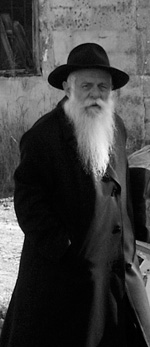

A Giant of Generosity
In Moscow, Tashkent, in displaced persons camps, in Paris, and in Kfar Chabad, during peacetime and war, R’ Zalman Sudakevich a”h was a model of unconditional chesed. He helped individuals and the public at large. * The life of a Chassid who recently passed away at the age of 98.

To the onlooker, it looked like R’ Zalman Sudakevich was a wealthy Chassid who was concerned mainly with his business affairs, whether during World War II or in Kfar Chabad in the early years, or in the later years together with his sons. However, the truth was that this Chassid was completely involved in helping other Jews. This was his only goal, no matter the place or the situation, even on behalf of those he did not know. That was R’ Zalman, a generous soul and a master at getting things done.
R’ Zalman was born in Poland on 15 Teves 5675/1915 to Gershon and Henya Sudakevich. In his youth, his family moved to Russia and settled in Moscow where he settled years later with his wife Sima Levin, from the Chassidishe family in Nevel.
R’ Zalman had a keen business sense and he was financially set at a young age, while many other Lubavitchers suffered from starvation. Being good-natured, R’ Zalman did not keep his money to himself. He opened his heart and his pocket and gave a fortune to help support many other Jews without keeping track of the money.
R’ Yechezkel Brod related:
“Three boys hid in the attic of the Marina Roscha shul and learned Torah. One of them was R’ Zalman Leib Estulin, another was R’ Nechemia Liss, and there was a third bachur. They sat and learned day and night. Good Jews, including my father, took care of them.
“One day, my father went to R’ Zalman Sudakevich who was a man of means and asked for his help. ‘I have a good shidduch suggestion for the bachur Nechemia Liss. We need an apartment for the young couple. I have the opportunity to buy two apartments in a building that R’ Yisroel Kook is building and he wants to sell them to G-d fearing Jews. An apartment costs 10,000 rubles. If I raise the money, we can make a wedding for the bachur.’
“R’ Zalman immediately committed to providing half the amount, 5000 rubles. My father was pleased and said he would go to other people and raise the rest. Then he diffidently said, ‘The truth is, I want Zalman Leib for my daughter and I need an apartment for them too, but I don’t know whether I am allowed to take from the money I am raising for Nechemia Liss for this purpose.’
“R’ Zalman was astounded by this person who was taking care of someone else’s child before his own, and only afterward revealed that he needed the same sort of help to marry off his daughter. On the spot, he said he would double his contribution and he gave my father another 5000 rubles to marry off his daughter.
“R’ Zalman suggested that he tell people that he was raising money for two brides and grooms and one of them was Nechemia Liss. That way, there would be no halachic question. My father did as he suggested.
“Within a short time, both weddings took place within a week of one another.”
R’ ZALMAN AS A REPRESENTATIVE OF THE JUSTICE MINISTRY
During World War II, R’ Zalman fled from the approaching Nazis and went to distant Tashkent. Many Jews had fled there, including a significant number of Chabad Chassidim. The financial and spiritual conditions were difficult and R’ Zalman helped on various fronts. He assisted people financially and also worked hard to maintain the secret chadarim.
There were also refugees who needed various documents and R’ Zalman did not hesitate to forge and buy documents in order to save these people from the dangers of wartime when millions of Jews perished.
A number of families, including the family of R’ Avrohom Plotkin, R’ Zalman Kalmanson, R’ Berke Chein, R’ Shmuel Menachem Klein and others had lived in the suburbs of Leningrad from where they fled, until they arrived in a forsaken village where they lived for two years. Then they heard that in Tashkent there was a nucleus of Lubavitcher Chassidim. They immediately got ready to travel there, but then discovered a major obstacle to their plans. Since the war was at its height, the communist government asked all citizens who wanted to move from city to city to first receive an invitation from a relative who lived in that city.
R’ Shmuel Menachem Klein wrote about this to his brother-in-law, R’ Yisroel Chosidov, who was already in Tashkent, and a few weeks later forged documents arrived at the village post office that had been sent from Tashkent for all the Lubavitcher families. The documents were signed by R’ Eli Lipsker as the representative of the Interior Ministry and R’ Zalman Sudekewitz as the representative of the Justice Ministry.
During the war, two Chassidim, R’ Mulle Pruss and R’ Yosef Mochkin, were caught and sent to a labor camp near the city. R’ Zalman was the one who helped them. One of the commanders of the camp would occasionally visit the city and R’ Zalman bribed him with a lot of money and the man gave them a pair of t’fillin.
HE HELPED THE ADMUR OF MACHNOVKA
R’ Zalman was very close to the Admur of Machnovka zt”l, Rabbi Avrohom Yehoshua Heschel Twersky (d. 1987). Their special relationship began before the war, when the Admur lived in Moscow and R’ Zalman helped him tremendously. During the war, the Admur moved to Tashkent, but the authorities ordered him to leave the city. The one who helped him was R’ Zalman. Years later, he revealed some of what he did:
“One day in Elul 1941, I met a friend who said that the Machnovka Rebbe had arrived, but when he tried extending his stay, they wrote in his passport that he must leave the city within 72 hours. He had no idea why he was different from others who were given unlimited extensions or extensions for long periods of time. This friend asked me whether I could help out so that the Admur would be able to remain in Tashkent without having to move from place to place.
“After receiving the Admur’s passport, I went to one of the officials with whom I was already friendly. I told him that this was my uncle who wasn’t in the best of health and he could not leave his home. I asked that permission be granted for a long extension. In the end he agreed and gave a three month extension for residence in the Kraso area, which was far from the center of the city.
“There was a minyan in our house. The Admur kept the Torah scroll of the holy Baal Shem Tov, which he had obtained, with us. The apartment was tiny with just one room, and the women left the house during the davening.
“When three months were up, I went back to that official and managed to convince him to grant another three month extension. I was very happy about this because, according to the law, a citizen who received permission to stay in a city for six months had the right to receive permission to live there for an entire year.
“When the next three months were up, I did not go back myself to that official for an extension, because I knew that the Admur could receive an extension without any problem. I sent my brother-in-law with the passport to extend it for a year. However, the official to whom he gave the passport went outside to my brother-in-law and said that the police chief (under whose auspices the registration took place) wanted to see me.
“When I arrived, he told me that he wanted to speak to me about a secret matter. He sent the other people out and when we were alone in the room he took out the passport and showed me that under ‘occupation’ it said, ‘tzaddikov.’ He told me he had looked up the word in the dictionary but did not find it. He asked me to explain to him what this mysterious profession is.
“With Hashem’s help, I came up with an idea. I said, ‘You see that he was born in the Ukraine as it says in the passport. Over there, they give that title of “tzaddik” to a tailor who designs and sews exclusive clothing.’ I also pointed at the picture in the passport and said, ‘Look at this picture. You can see that he is a special person.’ He looked at the picture and exclaimed, ‘Indeed, a special man!’ But he still hesitated to believe me. I asked that he give the year’s extension in any case and with time, he could verify what I said. I added that I would append my signature as testimony to the veracity of what I had told him. This helped and he agreed to give a year’s extension, which enabled the tzaddik to live in peace for another year.
“When I returned from this meeting, I sent my brother-in-law to the Admur to tell him what had happened because ‘tzaddik’ had been written on his passport. I suggested changing the passport, if he agreed, to prevent future problems. My brother-in-law came back with the response: The Rebbe refuses to change his passport.
“When the Admur came to our house to daven, I accompanied him after the davening in the attempt to convince him to change his passport. I made my case, ‘In my humble opinion it would be greatly desirable to change the passport in order, once and for all, to be rid of any problems. Who knows what new problems and troubles might arise because of this?’ But he remained firm in his refusal to change the passport. He explained, ‘This is how my holy father registered me. This is how my father and grandfather were registered, so I don’t want it changed.’”
***
While the Admur was living near R’ Zalman, he davened in the Sudakevich home. R’ Zalman said that due to communist persecution, the Admur tried not to arouse undue attention. He did not sit on the eastern wall but amidst the other people, and when people sat down for the third Shabbos meal, he would quietly sing the z’miros as was his custom. It was only on holidays that Chassidim went to him (during the war, Chassidim from different groups went to Tashkent) to spend time in his presence and then he gave out shirayim, l’chaim and the like.
R’ Zalman helped many people during the war. He also wanted to provide financial assistance for the tzaddik who lived nearby, but the Admur refused, saying, “People go to you and benefit from you [your money]; people are afraid to come to me [lest they be punished by association]. It is better then, that the money remains with you and Hashem will provide for me.”
Since he did not want to accept financial help, R’ Zalman provided him with work. R’ Zalman ran a sock weaving business from which many Jews earned a living. They took the raw materials home and made socks which R’ Zalman sold. The Admur agreed to join the business. A weaving machine was obtained for him and he learned to operate it and began weaving socks. He recited T’hillim and learned Zohar as he worked, as R’ Zalman related, “You could watch him operating the machine with one hand while holding a book in his other hand.”
When the war was over, the Admur returned to Moscow. Chassidim began preparing to escape the country via Lvov. R’ Zalman went from Tashkent to Lvov, stopping in Moscow along the way, where he asked the Admur to escape, as R’ Zalman related:
“At the beginning of 5707, I was planning on taking the opportunity of crossing the border as a Polish citizen as many did. I was living in Tashkent and I heard from friends that the secret police had their eyes on me and I should no longer remain at home. I went to Moscow for Simchas Torah to the Admur of Machnovka. He rejoiced greatly with me and did not let me go. He asked me to stay as his guest. At first, I refused. Their home was small and barely sufficed for them and I did not want to burden them, but the Admur insisted. He wanted to repay me for what I did for him in Tashkent.
“On Motzaei Yom Tov, I secretly told him my plans to cross the border in a few days and move to Eretz Yisroel, and I suggested that he join us. I told him that I could arrange this with all the documents, if he would agree, and within a few days we could leave this vale of tears.
“He thought a little bit and then said, ‘Go in life and peace! I must remain here. There is nobody here today that Jews can turn to and Jews come to me for me to strengthen them in emuna and Judaism. With Hashem’s help, I will yet get to Eretz Yisroel.’”
The Admur remained in Moscow for many more years and R’ Zalman left the country for Poland and then Austria.
WITH THE REBBE IN PARIS
A group of about three hundred Lubavitcher Chassidim settled in Vienna. Among them were the great mashpiim, R’ Shlomo Chaim Kesselman and R’ Yisroel Noach Blinitzky. Shortly after arriving in Vienna, a meeting was held in which a “vaad ha’poel” (working committee) was elected. The purpose of the vaad was to supervise material and spiritual matters of Anash.
R’ Zalman, who was known as an askan and a generous person, was chosen as a member of the vaad that also included: R’ Shmaryahu Sasonkin, R’ Betzalel Wilschansky, R’ Moshe Zalman Kaminetzky, R’ Yosef Goldberg, R’ Shmuel Betzalel Altheus, and R’ Yisroel Kugel. The vaad established an elementary school for the children of the Chassidim.
From Vienna the Chassidim continued to Paris where they were put up in a hotel. R’ Zalman told about his ties with Ramash (later to be the Rebbe) at this time:
“After Ramash arranged all the papers for the trip, a goodbye party was held in the home of R’ Zalman Schneersohn. Anash gathered and Ramash sat and farbrenged with them. Ramash asked R’ Isser Kluvgant: What is your name? He said: Isser.
Ramash said to him: Where do we see ‘Isser’ in the Torah, do you know? And the future Rebbe began explaining the meaning of the name but nobody heard the explanation except for Isser himself.
“I was suddenly called to the phone. I got up and when I returned to my place the future Rebbe told me to sit. Then he asked me my name. R’ Shneur Zalman Butman jumped in and said, ‘Shneur Zalman!’ But R’ Isser intervened and said, ‘I was the Torah reader in Tashkent for three years and they called him Efraim Zalman!’
“Ramash said: Shneur Zalman is one name. Shneur is a great light and Zalman in Greek means light. Shneur Zalman is one name. Efraim Zalman are two names. Like Efraim and Menasheh. Look at what Rashi says on this and that verse, and Ramash told me which Rashis to look at. In that Rashi it gave a solution to the problem that I had been thinking about at that time about arranging a visa (a problem I had not shared with anyone).
“After the farbrengen ended at seven in the morning, R’ Meir Charlov came with children from school (which was in the nearby shul, next to the room where we farbrenged) and began saying brachos out loud with the children. The Rebbe opened his eyes as though he had slept for the previous twelve hours and said: We need to go.
“We got up and he went into the room where the children said the brachos. There were about ten or twelve children. They held onto his gartel and the Rebbe danced with them for a long time, for fifteen to twenty minutes.
“R’ Bentzion Shemtov and R’ Isser Klugvant went out towards the end, and I remained until Ramash left (in accordance with the Halacha that you don’t leave a gathering as long as the leader remains). When we left, Ramash said to me: It must be arranged that nobody tell my mother that we sat here all night because it would aggravate her.”
ONE OF THE FOUNDERS OF KFAR CHABAD
After two years in Paris, R’ Zalman Sudakevich and his family moved to Eretz Yisroel. He ended up as a guest in the home of the chairman of Agudas Chassidei Chabad in Eretz Yisroel, R’ Eliezer Karasik. R’ Zalman spoke about his warm hospitality:
“When I arrived in Eretz Yisroel in 5719, I was greeted by my brother Moshe, who had arrived a few months before me. He told me that there was a warm-hearted Jew in Tel Aviv by the name of R’ Karasik who welcomed immigrants from Russia. That’s the first house people would go to where they get a hot glass of tea and benefit from the wise counsel of the rav. I followed his advice and went to the Karasik home. R’ Karasik was very helpful to me. He took a great interest in me and took care of my family’s needs.”
In the following months, the Rebbe Rayatz said to found a village for the Chabad Chassidim who had come from Russia. The Lubavitcher immigrants elected a vaad which included R’ Zalman. R’ Zalman Feldman was voted chairman of the vaad. There were five additional members: R’ Zalman Bronstein, R’ Avrohom Shmuel Garelik, R’ Yitzchok Meir Greenberg, R’ Zalman Sudakevich and R’ Dovid Chein. The vaad worked hard together with the heads of Aguch, and together they chose the location where Kfar Chabad is today.
R’ Zalman did not suffice with founding the Kfar, but along with his work in running a grocery store, and afterward the air conditioner factory that he opened in Kfar Chabad, he did a tremendous amount to establish Kfar Chabad and develop it. He was well-liked and made good connections with senior members of the Israeli government, through whom he received much aid for Kfar Chabad and its residents.
When Kfar Chabad was founded, R’ Zalman served as director of the religious council of the Kfar. He did this as a volunteer, seeing to all religious matters of the new village. He also saw to the salaries and work conditions of the rav, shochet, secretary, bookkeeper, mikva attendants, those in charge of trumos and maaser, the Shamash of the shul, supervisor of the eiruv, etc. In this way, he helped Jews with their parnasa.
In copies of letters that I have, one can see the extent of his work, along with others, to obtain a significant budget for the religious needs of Kfar Chabad as well as improving and maintaining the mikva and eiruv.
In later years, he made connections with supervisors in the Education Ministry and with Mr. Zalman Shazar. He was greatly helped by them with aid for Kfar Chabad and its schools, which continued to grow and needed a great deal of help. One of the things he spoke about was his efforts on behalf of establishing that Jewish studies take place before secular studies in the schools, as the Rebbe instructed.
He was appointed a member of the hanhala of Aguch as a representative of Kfar Chabad. For decades he worked on behalf of Kfar Chabad and mosdos Chabad, whether with financial help or with his connections. He himself raised significant funds for the Tomchei T’mimim yeshivos in Lud and Kfar Chabad.
***
R’ Zalman passed away last month. He is survived by his wife Sima and his children: R’ Shraga Feitel, R’ Gershon, Chana Ashkenazi and Chaya Aaronson, grandchildren and great-grandchildren who follow in his ways.
WHEN REB ZALMAN GOT TO HEAR THE REST OF THE STORY
One Shabbos afternoon in the shul in Kfar Chabad, people were sitting around tables and farbrenging, listening to the elder Chassidim speak words of inspiration or relate stories of Chassidim of yesteryear. Between niggunim and drinking l’chaim, one of the seniors, R’ Zalman Sudakevich, began telling a story from his youth.
It was 5707 and he was living in Paris after escaping communist Russia. A large group of Chassidim had managed to cross the border after years of suffering and observing mitzvos in secret.
Paris was a way station. The refugees gathered there and waited for instructions from the Rebbe Rayatz about where to go. The Rebbe sent Chassidim in a number of directions. Many were told to move to Eretz Yisroel, others were told to go to the United States, and some were told to go to Australia.
R’ Zalman was told to go to Eretz Yisroel and he was one of the founders of Kfar Chabad, but at this time, he lived in Paris. One day, two Chassidim who were older than he was, R’ Yehuda Chein and R’ Chaim Schreiber, told him that the Rebbe Rayatz instructed them to walk in the streets of Paris. The Rebbe did not state the goal and they assumed they would figure out the reason somehow. R’ Zalman’s curiosity was aroused and he went along with them.
They walked aimlessly as they passed through the ninth arrondissement, on one of the tiny streets, and suddenly heard someone calling from one of the buildings. They looked up and saw an old Jewish woman on the fifth floor motioning to wait for her. They waited for her to come down.
She came down and in fluent Yiddish she said that she needed help. She had a grandson who lived in that district whose parents were not religious. Her grandson was becoming bar mitzva, and there was no one to learn with him about the significance of this day in the life of a Jew.
With tears in her eyes she explained that it was very important to her that the boy have an Aliya in shul, but she did not know anyone who taught bar mitzva boys. When she saw them walking down the street, she felt they had been sent to her from Heaven so they could direct her to the people who could help her grandson prepare for his Aliya l’Torah, and take charge of the simcha in shul.
The Chassidim were happy at the opportunity to help her and they referred her to the nearby shul. The Chassidim were moved by this encounter and assumed that this was the reason the Rebbe had told them to walk in the streets of Paris and now they could return home.
After several weeks of study, the boy’s Aliya to the Torah took place in the shul, to the grandmother’s great joy. She warmly thanked the Chassidim and then, almost in a whisper, she added, “Who knows, maybe the day will come when this boy will be able to say Kaddish for me.”
R’ Zalman finished his story. His audience was duly impressed by the Hashgacha Pratis, but one person present, R’ Dovid Lesselbaum, felt a cold sweat break out.
“Tell me,” he said to R’ Zalman, “do you remember the name of the shul where the bar mitzva took place?”
“Of course,” said R’ Zalman. “It was called the Rashi shul.”
R’ Dovid had another question or two before he blurted out, “I was that boy!”
R’ Dovid and R’ Zalman looked at one another in disbelief. After he had calmed down, R’ Dovid said, “I remember my grandmother’s concern that I have a bar mitzva ceremony in the traditional way. At that time, I did not even know a single Hebrew letter and I did not know about Torah and mitzvos. I did it just because she asked, out of respect for her.
“My grandmother lived in the twentieth arrondissement, but she often visited my aunt who lived in the ninth arrondissement, where I also lived and where she met the Chassidim who directed her to the shul where I had my Aliya.
“The bar mitzva celebration and the Aliya to the Torah were what changed the direction of my life to that of full mitzva observance and years later to my becoming a Lubavitcher.
“When my grandmother died, I was the only one out of the entire family who observed her yahrtzait with davening and Kaddish. There are many yahrtzait dates in my family that I don’t remember, but I remember hers. My grandmother’s request was honored.
“How amazing are the ways of hashgacha. We all knew R’ Yehuda Chein and R’ Chaim Schreiber, genuine Chassidim from Kfar Chabad who are no longer with us. I would never know that they were the ones who were sent to save me, if R’ Zalman had not accompanied them and told us about it.
“The Rebbe Rayatz sent his emissaries to help a French boy to return to his roots.”
Berger. "A Giant of Generosity." Beis Moshiach, no. 870 (February 20, 2013).